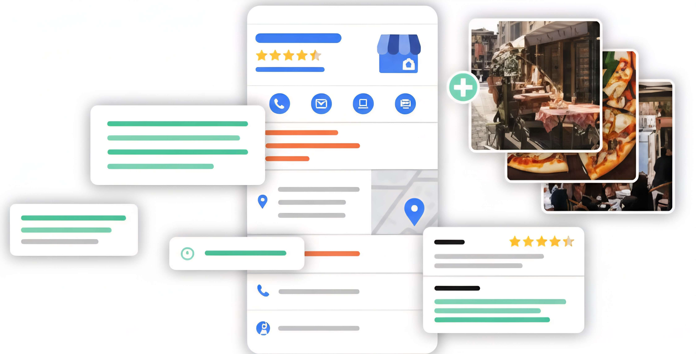

We position your business in the Google Local 3-Pack and Google Maps so you show up first when it matters most. Real calls, real foot traffic, real growth — without paying for every click.
Average increase in local traffic
Position in Local Pack
To dominate local searches
Local SEO is a digital positioning strategy that optimizes your online presence so you appear in search results when potential customers search for services or products near your location. It's especially important for businesses with a physical location.
Appearing in the top 3 local results is crucial for capturing customers.
Significantly increases calls from interested local customers.
Attract physical visitors to your business with specific local strategy.
Outperform your local competitors in online visibility.

Complete approach to dominate local results
We completely optimize your Google Business Profile for maximum local visibility.
Research and optimization of keywords specific to your geographic area.
Building quality links from local directories and relevant sites.
Active strategy to obtain and manage positive reviews.
Deep analysis of technical issues affecting your local SEO.
Detailed tracking of results and continuous optimization.
Get your free 30-minute Local SEO audit